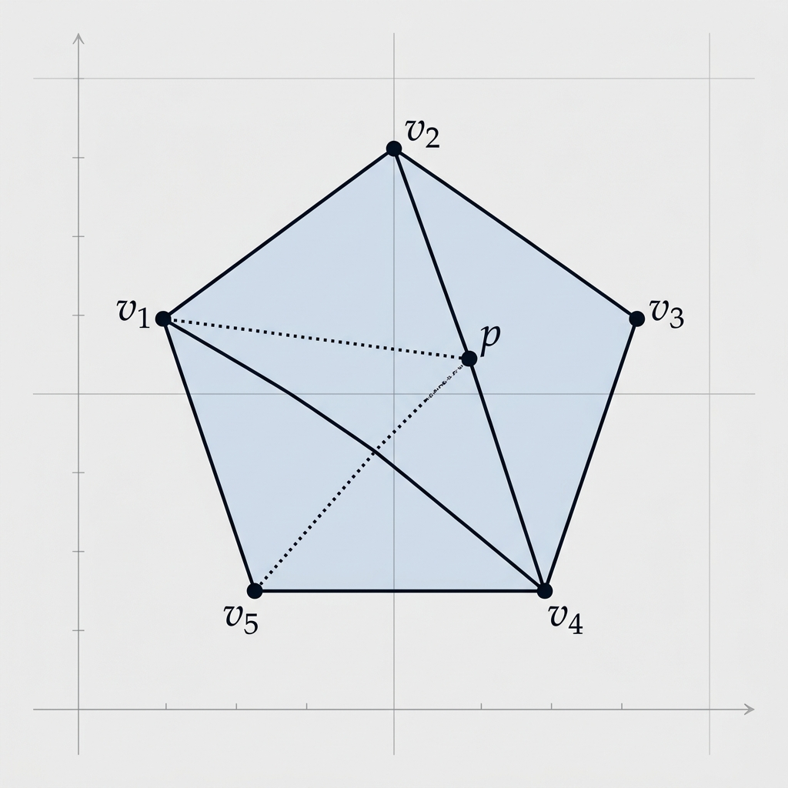

Minkowski-Carathéodory Theorem

Mathematical Exposition
The Minkowski-Carathéodory Theorem (or Carathéodory's Theorem for convex hulls) is a fundamental result in convex analysis. It states that if a point $x \in \mathbb{R}^d$ lies in the convex hull of a set $P$, then $x$ can be written as a convex combination of at most $d+1$ points in $P$. When combined with Minkowski's theorem for compact convex sets, it states that every point in a compact convex set $K \subset \mathbb{R}^d$ is a convex combination of at most $d+1$ extreme points of $K$.
Mathematical Statement
Let $K \subset \mathbb{R}^d$ be a compact, convex set. Let $\operatorname{ext}(K)$ denote the set of extreme points of $K$ (points in $K$ that do not lie in the open segment between any two distinct points of $K$). Then for any $x \in K$, there exist $k \le d+1$ extreme points $v_1, \dots, v_k \in \operatorname{ext}(K)$ and positive real numbers $\lambda_1, \dots, \lambda_k$ such that:
$$\sum_{i=1}^k \lambda_i = 1, \quad \lambda_i \ge 0, \quad \text{and} \quad x = \sum_{i=1}^k \lambda_i v_i$$Geometric Intuition
In 2-dimensional space ($d=2$), any point inside a convex polygon can be enclosed by a triangle whose vertices are chosen from the polygon's vertices (which are the extreme points of the polygon). In 3D space ($d=3$), any point inside a convex polyhedron can be enclosed by a tetrahedron formed by four of the polyhedron's vertices. The theorem guarantees that we never need more than $d+1$ points, regardless of how many extreme points the set has.
Lean 4 Formalization
The Lean 4 formalization proves `mem_convexHull_finset_extremePoints_of_mem_compact_convex` in Mathlib. The proof proceeds by induction on the dimension of the space. If the interior of the compact convex set is empty, the set is contained in an affine subspace of lower dimension, so we can apply the induction hypothesis. If the interior is non-empty, we can use the geometric Hahn-Banach theorem to separate any point on the boundary from the interior by a hyperplane, projecting the problem to a lower-dimensional boundary face where the induction hypothesis holds. If the target point $x$ is in the interior, we draw a line through it, intersecting the boundary in two points, which themselves can be represented by extreme points by induction, and then take a convex combination of those representations.
import Mathlib
import Submission.Helpers
open Set Finset
universe u
namespace Submission
/-!
## Proof of Minkowski-Carathéodory theorem
Every point in a compact convex set in finite dimensions is in the convex hull
of at most `finrank + 1` extreme points.
-/
lemma image_extremePoints_of_injective_affineMap
{E F : Type u} [AddCommGroup E] [Module ℝ E] [AddCommGroup F] [Module ℝ F]
(f : E →ᵃ[ℝ] F) (hf : Function.Injective f) (s : Set E) :
f '' s.extremePoints ℝ = (f '' s).extremePoints ℝ := by
ext y
simp only [mem_image]
constructor
· rintro ⟨x, hx, rfl⟩
rw [mem_extremePoints] at hx ⊢
refine ⟨⟨x, hx.1, rfl⟩, ?_⟩
rintro y₁ ⟨x₁, hx₁, rfl⟩ y₂ ⟨x₂, hx₂, rfl⟩ hy
have hy' : f x ∈ f '' openSegment ℝ x₁ x₂ := by
rwa [image_openSegment ℝ f]
obtain ⟨z, hz, hz'⟩ := hy'
have hzx : z = x := hf hz'
rw [hzx] at hz
have := hx.2 x₁ hx₁ x₂ hx₂ hz
exact ⟨congrArg f this.1, congrArg f this.2⟩
· rintro ⟨hx1, hx2⟩
obtain ⟨x, hx_in_s, rfl⟩ := hx1
refine ⟨x, ?_, rfl⟩
rw [mem_extremePoints_iff_left]
refine ⟨hx_in_s, ?_⟩
intro x₁ hx₁ x₂ hx₂ hx
have hy : f x ∈ openSegment ℝ (f x₁) (f x₂) := by
have : f x ∈ f '' openSegment ℝ x₁ x₂ := mem_image_of_mem f hx
rwa [image_openSegment ℝ f] at this
have hy' := hx2 ⟨x₁, hx₁, rfl⟩ ⟨x₂, hx₂, rfl⟩ hy
exact hf hy'
def vadd_affineEquiv {E : Type u} [AddCommGroup E] [Module ℝ E] (v : E) : E ≃ᵃ[ℝ] E :=
{ Equiv.addLeft v with
linear := LinearEquiv.refl ℝ E
map_vadd' := fun p₁ p₂ ↦ by simp [add_left_comm, add_comm] }
lemma extremePoints_vadd_affineEquiv
{E : Type u} [AddCommGroup E] [Module ℝ E] (v : E) (s : Set E) :
(vadd_affineEquiv v).toAffineMap '' s.extremePoints ℝ = ((vadd_affineEquiv v).toAffineMap '' s).extremePoints ℝ := by
exact image_extremePoints_of_injective_affineMap _ (vadd_affineEquiv v).injective s
lemma submodule_extremePoints
{E : Type u} [NormedAddCommGroup E] [NormedSpace ℝ E]
(V : Submodule ℝ E) (s : Set V) :
V.subtype '' s.extremePoints ℝ = (V.subtype '' s).extremePoints ℝ := by
exact image_extremePoints_of_injective_affineMap V.subtype.toAffineMap Subtype.val_injective s
lemma submodule_convexHull
{E : Type u} [NormedAddCommGroup E] [NormedSpace ℝ E]
(V : Submodule ℝ E) (s : Set V) :
V.subtype '' convexHull ℝ s = convexHull ℝ (V.subtype '' s) := by
exact AffineMap.image_convexHull V.subtype.toAffineMap s
lemma finrank_span_lt_of_interior_empty
{E : Type u} [NormedAddCommGroup E] [NormedSpace ℝ E] [FiniteDimensional ℝ E]
{s : Set E} (hsconv : Convex ℝ s) (h_int : interior s = ∅) (h0 : (0 : E) ∈ s) :
Module.finrank ℝ (Submodule.span ℝ s) < Module.finrank ℝ E := by
have h_span : Submodule.span ℝ s = vectorSpan ℝ s := by
have := vectorSpan_eq_span_vsub_set_right ℝ h0
have h_eq : (fun x ↦ x -ᵥ (0 : E)) '' s = s := by
ext x
simp [vsub_eq_sub]
rw [h_eq] at this
exact this.symm
have h_lt : Submodule.span ℝ s < ⊤ := by
apply lt_top_iff_ne_top.mpr
intro htop
have h_vec_top : vectorSpan ℝ s = ⊤ := by rw [← h_span, htop]
have hs_ne : s.Nonempty := ⟨0, h0⟩
have h_aff_top : affineSpan ℝ s = ⊤ := by
rw [AffineSubspace.affineSpan_eq_top_iff_vectorSpan_eq_top_of_nonempty ℝ E E hs_ne]
exact h_vec_top
have h_nonempty : (interior s).Nonempty := hsconv.interior_nonempty_iff_affineSpan_eq_top.mpr h_aff_top
rw [h_int] at h_nonempty
exact Set.not_nonempty_empty h_nonempty
have := Submodule.finrank_lt_finrank_of_lt h_lt
rwa [finrank_top] at this
lemma finrank_direction_lt_finrank_of_subset_hyperplane
{E : Type u} [NormedAddCommGroup E] [NormedSpace ℝ E] [FiniteDimensional ℝ E]
{B : Set E} {f : E →L[ℝ] ℝ} {c : ℝ}
(hf : f ≠ 0) (hB : ∀ y ∈ B, f y = c) :
Module.finrank ℝ (affineSpan ℝ B).direction < Module.finrank ℝ E := by
have h_le : (affineSpan ℝ B).direction ≤ LinearMap.ker (f : E →ₗ[ℝ] ℝ) := by
rw [direction_affineSpan]
apply Submodule.span_le.mpr
rintro v ⟨p₁, hp₁, p₂, hp₂, rfl⟩
simp only [SetLike.mem_coe, LinearMap.mem_ker, ContinuousLinearMap.coe_coe]
rw [vsub_eq_sub, f.map_sub]
have h1 : f p₁ = c := hB p₁ hp₁
have h2 : f p₂ = c := hB p₂ hp₂
rw [h1, h2, sub_self]
have h_lt : Module.finrank ℝ (LinearMap.ker (f : E →ₗ[ℝ] ℝ)) < Module.finrank ℝ (⊤ : Submodule ℝ E) := by
apply Submodule.finrank_lt_finrank_of_lt
apply lt_top_iff_ne_top.mpr
intro htop
have : (f : E →ₗ[ℝ] ℝ) = 0 := LinearMap.ker_eq_top.mp htop
apply hf
ext x
have hx : (f : E →ₗ[ℝ] ℝ) x = 0 := by rw [this]; rfl
exact hx
have h_lt2 : Module.finrank ℝ (LinearMap.ker (f : E →ₗ[ℝ] ℝ)) < Module.finrank ℝ E := by
rwa [finrank_top] at h_lt
exact lt_of_le_of_lt (Submodule.finrank_mono h_le) h_lt2
lemma extremePoint_of_singleton {E : Type u} [AddCommGroup E] [Module ℝ E]
{s : Set E} {x : E} (hs : s = {x}) : x ∈ s.extremePoints ℝ := by
rw [mem_extremePoints]
constructor
· rw [hs]; exact mem_singleton x
· intro y hy z hz hxyz
rw [hs] at hy hz
exact ⟨mem_singleton_iff.mp hy, mem_singleton_iff.mp hz⟩
lemma eq_singleton_of_compact_convex_finrank_zero
{E : Type u} [NormedAddCommGroup E] [NormedSpace ℝ E] [FiniteDimensional ℝ E]
{s : Set E} {x : E}
(hx : x ∈ s)
(h0 : Module.finrank ℝ (affineSpan ℝ s).direction = 0) :
s = {x} := by
ext y
constructor
· intro hy
have hxy : y -ᵥ x ∈ (affineSpan ℝ s).direction :=
AffineSubspace.vsub_mem_direction (subset_affineSpan ℝ s hy) (subset_affineSpan ℝ s hx)
haveI : FiniteDimensional ℝ (affineSpan ℝ s).direction :=
Submodule.finiteDimensional_of_le le_top
have : (affineSpan ℝ s).direction = ⊥ := by rwa [Submodule.finrank_eq_zero] at h0
rw [this] at hxy
simp [Submodule.mem_bot] at hxy
exact mem_singleton_iff.mpr (eq_of_vsub_eq_zero hxy)
· intro hy; rw [mem_singleton_iff] at hy; rwa [hy]
lemma exists_segment_extension {E : Type u} [NormedAddCommGroup E] [NormedSpace ℝ E]
{s : Set E} (hscomp : IsCompact s)
{y z : E} (hy : y ∈ s) (hz : z ∈ s) (hyz : y ≠ z) :
∃ (tmin tmax : ℝ),
y + tmin • (z - y) ∈ s ∧
y + tmax • (z - y) ∈ s ∧
tmin ≤ 0 ∧ 1 ≤ tmax ∧
(∀ t, y + t • (z - y) ∈ s → tmin ≤ t ∧ t ≤ tmax) := by
have hv : z - y ≠ 0 := sub_ne_zero.mpr hyz.symm
set T := {t : ℝ | y + t • (z - y) ∈ s}
have hT_compact : IsCompact T := by
apply Metric.isCompact_of_isClosed_isBounded
· exact hscomp.isClosed.preimage (by fun_prop)
· obtain ⟨R, hR⟩ := hscomp.isBounded.subset_closedBall y
apply (Metric.isBounded_closedBall (x := (0:ℝ)) (r := R / ‖z - y‖)).subset
intro t ht
simp only [T, mem_setOf_eq] at ht
rw [Metric.mem_closedBall, Real.dist_eq, sub_zero]
have hv_pos : (0 : ℝ) < ‖z - y‖ := norm_pos_iff.mpr hv
have h1 := hR ht
rw [Metric.mem_closedBall] at h1
have h2 : dist (y + t • (z - y)) y = |t| * ‖z - y‖ := by
rw [dist_eq_norm]; simp [norm_smul, Real.norm_eq_abs]
rw [h2] at h1; rwa [le_div_iff₀ hv_pos]
have h0_mem : (0 : ℝ) ∈ T := by show y + 0 • (z - y) ∈ s; simp [hy]
have h1_mem : (1 : ℝ) ∈ T := by
show y + 1 • (z - y) ∈ s; rw [one_smul, add_sub_cancel]; exact hz
obtain ⟨tmin, htmin_mem, htmin_min⟩ := hT_compact.exists_isMinOn ⟨0, h0_mem⟩ continuousOn_id
obtain ⟨tmax, htmax_mem, htmax_max⟩ := hT_compact.exists_isMaxOn ⟨0, h0_mem⟩ continuousOn_id
exact ⟨tmin, tmax, htmin_mem, htmax_mem, htmin_min h0_mem, htmax_max h1_mem,
fun t ht => ⟨htmin_min ht, htmax_max ht⟩⟩
lemma direction_vadd_set {E : Type u} [NormedAddCommGroup E] [NormedSpace ℝ E]
(s : Set E) (v : E) :
(affineSpan ℝ ((fun y ↦ v + y) '' s)).direction = (affineSpan ℝ s).direction := by
rw [direction_affineSpan, direction_affineSpan]
apply le_antisymm
· apply Submodule.span_le.mpr
rintro w ⟨y₁, hy₁, y₂, hy₂, rfl⟩
simp only [mem_image] at hy₁ hy₂
rcases hy₁ with ⟨x₁, hx₁, rfl⟩
rcases hy₂ with ⟨x₂, hx₂, rfl⟩
change (v + x₁) -ᵥ (v + x₂) ∈ vectorSpan ℝ s
have : (v + x₁) -ᵥ (v + x₂) = x₁ -ᵥ x₂ := by simp [vsub_eq_sub, add_sub_add_left_eq_sub]
rw [this]
exact Submodule.subset_span ⟨x₁, hx₁, x₂, hx₂, rfl⟩
· apply Submodule.span_le.mpr
rintro w ⟨x₁, hx₁, x₂, hx₂, rfl⟩
change x₁ -ᵥ x₂ ∈ vectorSpan ℝ ((fun y ↦ v + y) '' s)
have : x₁ -ᵥ x₂ = (v + x₁) -ᵥ (v + x₂) := by simp [vsub_eq_sub, add_sub_add_left_eq_sub]
rw [this]
exact Submodule.subset_span ⟨v + x₁, mem_image_of_mem _ hx₁, v + x₂, mem_image_of_mem _ hx₂, rfl⟩
lemma direction_eq_span_of_mem {E : Type u} [NormedAddCommGroup E] [NormedSpace ℝ E]
(B : Set E) (h0 : (0 : E) ∈ B) :
(affineSpan ℝ B).direction = Submodule.span ℝ B := by
have hd : (fun x ↦ x -ᵥ (0 : E)) '' B = B := by ext x; simp
have h_vec := vectorSpan_eq_span_vsub_set_right ℝ h0
rw [hd] at h_vec
rw [direction_affineSpan, h_vec]
lemma mem_convexHull_extremePoints_of_dim_drop
(n : ℕ)
(ih : ∀ (m : ℕ), m < n →
∀ {E : Type u} [NormedAddCommGroup E] [NormedSpace ℝ E] [FiniteDimensional ℝ E]
{s : Set E} {x : E},
Module.finrank ℝ E = m →
IsCompact s → Convex ℝ s → x ∈ s → x ∈ convexHull ℝ (s.extremePoints ℝ))
{E : Type u} [NormedAddCommGroup E] [NormedSpace ℝ E] [FiniteDimensional ℝ E]
{s B : Set E} {x : E}
(_hn : Module.finrank ℝ E = n)
(hB_comp : IsCompact B) (hB_conv : Convex ℝ B)
(hxB : x ∈ B)
(hB_lt : Module.finrank ℝ (affineSpan ℝ B).direction < n)
(h_ext : B.extremePoints ℝ ⊆ s.extremePoints ℝ) :
x ∈ convexHull ℝ (s.extremePoints ℝ) := by
set v := -x
set eqv := vadd_affineEquiv v
set f := eqv.toAffineMap
set B' := f '' B
have h0_B' : (0 : E) ∈ B' := by
have hfx : f x = 0 := neg_add_cancel x
rw [← hfx]
exact mem_image_of_mem f hxB
have hB'comp : IsCompact B' := by
have h_cont : Continuous (f : E → E) := by
have h_eq : (f : E → E) = fun y ↦ -x + y := rfl
rw [h_eq]
exact continuous_const.add continuous_id
exact hB_comp.image h_cont
have hB'conv : Convex ℝ B' := hB_conv.affine_image f
have h_span : Submodule.span ℝ B' = (affineSpan ℝ B).direction := by
have hd1 : (affineSpan ℝ B').direction = Submodule.span ℝ B' := direction_eq_span_of_mem B' h0_B'
have hd2 : (affineSpan ℝ B').direction = (affineSpan ℝ B).direction := by
have hB'_eq : B' = (fun y ↦ -x + y) '' B := by ext y; rfl
rw [hB'_eq]
exact direction_vadd_set B (-x)
rw [← hd2, hd1]
set V := Submodule.span ℝ B'
have h_lt : Module.finrank ℝ V < n := by rwa [h_span]
set sV := V.subtype ⁻¹' B'
have h_sV_comp : IsCompact sV := by
rw [Topology.IsEmbedding.subtypeVal.isCompact_iff]
have h_image : Subtype.val '' sV = B' := by
ext y
constructor
· rintro ⟨x, hx, rfl⟩
exact hx
· intro hy
exact ⟨⟨y, Submodule.subset_span hy⟩, hy, rfl⟩
rw [h_image]
exact hB'comp
have h_sV_conv : Convex ℝ sV := hB'conv.affine_preimage V.subtype.toAffineMap
have h0_sV : (0 : V) ∈ sV := by
simp only [sV, Set.mem_preimage]
exact h0_B'
have h_ih := @ih (Module.finrank ℝ V) h_lt ↥V _ _ _ sV 0 rfl h_sV_comp h_sV_conv h0_sV
have h_lift : V.subtype '' convexHull ℝ (sV.extremePoints ℝ) = convexHull ℝ (B'.extremePoints ℝ) := by
rw [submodule_convexHull, submodule_extremePoints]
have h_image : V.subtype '' sV = B' := by
ext y
constructor
· rintro ⟨x, hx, rfl⟩
exact hx
· intro hy
exact ⟨⟨y, Submodule.subset_span hy⟩, hy, rfl⟩
rw [h_image]
have h0_hull : (0 : E) ∈ convexHull ℝ (B'.extremePoints ℝ) := by
have h0_val : (0 : E) = V.subtype (0 : V) := rfl
rw [h0_val, ← h_lift]
exact mem_image_of_mem V.subtype h_ih
have h_eqv_symm : eqv.symm.toAffineMap '' convexHull ℝ (B'.extremePoints ℝ) = convexHull ℝ (B.extremePoints ℝ) := by
rw [AffineMap.image_convexHull, ← extremePoints_vadd_affineEquiv v B]
have h_img : eqv.symm.toAffineMap '' (eqv.toAffineMap '' B.extremePoints ℝ) = B.extremePoints ℝ := by
exact Equiv.symm_image_image eqv.toEquiv (B.extremePoints ℝ)
rw [h_img]
have hx_hull : eqv.symm.toAffineMap 0 ∈ convexHull ℝ (B.extremePoints ℝ) := by
rw [← h_eqv_symm]
exact mem_image_of_mem _ h0_hull
have hx_eq : eqv.symm.toAffineMap 0 = x := by
change eqv.symm 0 = x
have h1 : eqv.symm 0 = -v + 0 := rfl
rw [h1, add_zero, neg_neg]
rw [hx_eq] at hx_hull
exact convexHull_mono h_ext hx_hull
lemma mem_convexHull_extremePoints_of_compact_convex_finrank (n : ℕ) :
∀ {E : Type u} [NormedAddCommGroup E] [NormedSpace ℝ E] [FiniteDimensional ℝ E]
{s : Set E} {x : E},
Module.finrank ℝ E = n →
IsCompact s → Convex ℝ s → x ∈ s → x ∈ convexHull ℝ (s.extremePoints ℝ) := by
induction' n using Nat.strong_induction_on with n ih
intro E _ _ _ s x hn hscomp hsconv hx
by_cases h_int : (interior s).Nonempty
· have h_bound : ∀ y ∈ s, y ∉ interior s → y ∈ convexHull ℝ (s.extremePoints ℝ) := by
intro y hy_mem hy_not_int
obtain ⟨f, hf_ne, hf_le⟩ := geometric_hahn_banach_of_nonempty_interior_point hsconv hy_not_int h_int
let B := {z ∈ s | f z = f y}
have hB_comp : IsCompact B := by
have hB_eq : B = s ∩ (f : E → ℝ) ⁻¹' {f y} := by ext z; rfl
rw [hB_eq]
exact hscomp.inter_right (isClosed_singleton.preimage f.continuous)
have hB_conv : Convex ℝ B := by
intro z₁ hz₁ z₂ hz₂ a b ha hb hab
refine ⟨hsconv hz₁.1 hz₂.1 ha hb hab, ?_⟩
simp only [ContinuousLinearMap.map_add]
rw [f.map_smul, f.map_smul, hz₁.2, hz₂.2, ← add_smul, hab, one_smul]
have hB_lt : Module.finrank ℝ (affineSpan ℝ B).direction < n := by
rw [← hn]
apply finrank_direction_lt_finrank_of_subset_hyperplane hf_ne
intro z hz; exact hz.2
have hyB : y ∈ B := ⟨hy_mem, rfl⟩
have h_exposed : IsExposed ℝ s B := by
intro _
refine ⟨f, ?_⟩
ext z
change z ∈ {w ∈ s | f w = f y} ↔ z ∈ s ∧ ∀ w ∈ s, f w ≤ f z
simp only [Set.mem_setOf_eq]
constructor
· rintro ⟨hz_mem, hz_eq⟩
exact ⟨hz_mem, fun w _hw ↦ by rw [hz_eq]; exact hf_le w _hw⟩
· rintro ⟨hz_mem, hz_le⟩
refine ⟨hz_mem, le_antisymm (hf_le z hz_mem) (hz_le y hy_mem)⟩
have h_extreme : IsExtreme ℝ s B := h_exposed.isExtreme
have h_ext : B.extremePoints ℝ ⊆ s.extremePoints ℝ := h_extreme.extremePoints_subset_extremePoints
exact mem_convexHull_extremePoints_of_dim_drop n ih hn hB_comp hB_conv hyB hB_lt h_ext
by_cases hx_int : x ∈ interior s
· by_cases hs_sing : s = {x}
· have h_ext := extremePoint_of_singleton hs_sing
exact subset_convexHull ℝ (s.extremePoints ℝ) h_ext
· have hs_ne_sing : ∃ z ∈ s, z ≠ x := by
by_contra h_contra
push Not at h_contra
have : s = {x} := by
ext y; constructor
· intro hy; rw [h_contra y hy]; exact mem_singleton x
· intro hy; rwa [mem_singleton_iff.mp hy]
exact hs_sing this
obtain ⟨z, hz_mem, hz_ne⟩ := hs_ne_sing
obtain ⟨tmin, tmax, hmin_mem, hmax_mem, hmin_le, hmax_ge, ht⟩ := exists_segment_extension hscomp hx hz_mem hz_ne.symm
set p_min := x + tmin • (z - x)
set p_max := x + tmax • (z - x)
have hmin_not_int : p_min ∉ interior s := by
intro h_in
obtain ⟨ε, hε, h_ball⟩ := Metric.isOpen_iff.mp isOpen_interior p_min h_in
have h_nz : ‖z - x‖ ≠ 0 := norm_pos_iff.mpr (sub_ne_zero.mpr hz_ne) |>.ne'
set δ := ε / ‖z - x‖ / 2
have hδ : 0 < δ := half_pos (div_pos hε (norm_pos_iff.mpr (sub_ne_zero.mpr hz_ne)))
set t' := tmin - δ
have hp' : x + t' • (z - x) ∈ s := by
have h_eq : x + t' • (z - x) = p_min + (-δ) • (z - x) := by
simp only [p_min, t', sub_smul, add_assoc]
congr 1
rw [sub_eq_add_neg, ← neg_smul]
rw [h_eq]
apply interior_subset
apply h_ball
rw [Metric.mem_ball, dist_eq_norm, add_sub_cancel_left, norm_smul, Real.norm_eq_abs, abs_neg, abs_of_pos hδ]
have h_mul : δ * ‖z - x‖ = ε / 2 := by
calc δ * ‖z - x‖ = (ε / ‖z - x‖ / 2) * ‖z - x‖ := rfl
_ = (ε / ‖z - x‖ * ‖z - x‖) / 2 := by ring
_ = ε / 2 := by rw [div_mul_cancel₀ _ h_nz]
rw [h_mul]
exact half_lt_self hε
have := ht t' hp'
linarith [this.1, hδ]
have hmax_not_int : p_max ∉ interior s := by
intro h_in
obtain ⟨ε, hε, h_ball⟩ := Metric.isOpen_iff.mp isOpen_interior p_max h_in
have h_nz : ‖z - x‖ ≠ 0 := norm_pos_iff.mpr (sub_ne_zero.mpr hz_ne) |>.ne'
set δ := ε / ‖z - x‖ / 2
have hδ : 0 < δ := half_pos (div_pos hε (norm_pos_iff.mpr (sub_ne_zero.mpr hz_ne)))
set t' := tmax + δ
have hp' : x + t' • (z - x) ∈ s := by
have h_eq : x + t' • (z - x) = p_max + δ • (z - x) := by
simp only [p_max, t', add_smul, add_assoc]
rw [h_eq]
apply interior_subset
apply h_ball
rw [Metric.mem_ball, dist_eq_norm, add_sub_cancel_left, norm_smul, Real.norm_eq_abs, abs_of_pos hδ]
have h_mul : δ * ‖z - x‖ = ε / 2 := by
calc δ * ‖z - x‖ = (ε / ‖z - x‖ / 2) * ‖z - x‖ := rfl
_ = (ε / ‖z - x‖ * ‖z - x‖) / 2 := by ring
_ = ε / 2 := by rw [div_mul_cancel₀ _ h_nz]
rw [h_mul]
exact half_lt_self hε
have := ht t' hp'
linarith [this.2, hδ]
have hmin_hull := h_bound p_min hmin_mem hmin_not_int
have hmax_hull := h_bound p_max hmax_mem hmax_not_int
have h_t_diff : 0 < tmax - tmin := sub_pos.mpr (hmin_le.trans_lt (by linarith))
let a := tmax / (tmax - tmin)
let b := -tmin / (tmax - tmin)
have ha_nonneg : 0 ≤ a := div_nonneg (by linarith) (by linarith)
have hb_nonneg : 0 ≤ b := div_nonneg (by linarith) (by linarith)
have hab : a + b = 1 := by
change tmax / (tmax - tmin) + -tmin / (tmax - tmin) = 1
rw [← add_div, ← sub_eq_add_neg, div_self h_t_diff.ne']
have hx_seg : x ∈ segment ℝ p_min p_max := by
rw [segment_eq_image]
refine ⟨b, ⟨hb_nonneg, ?_⟩, ?_⟩
· exact (div_le_one₀ h_t_diff).mpr (by linarith)
· have h_1b : 1 - b = a := by linarith [hab]
change (1 - b) • p_min + b • p_max = x
rw [h_1b]
calc a • (x + tmin • (z - x)) + b • (x + tmax • (z - x))
_ = (a • x + (a * tmin) • (z - x)) + (b • x + (b * tmax) • (z - x)) := by rw [smul_add, smul_smul, smul_add, smul_smul]
_ = (a • x + b • x) + ((a * tmin) • (z - x) + (b * tmax) • (z - x)) := by abel
_ = (a + b) • x + (a * tmin + b * tmax) • (z - x) := by rw [← add_smul, ← add_smul]
_ = x := by
have h_zero : a * tmin + b * tmax = 0 := by
calc (tmax / (tmax - tmin)) * tmin + (-tmin / (tmax - tmin)) * tmax
_ = (tmax * tmin) / (tmax - tmin) + (-tmin * tmax) / (tmax - tmin) := by ring
_ = (tmax * tmin - tmin * tmax) / (tmax - tmin) := by ring
_ = 0 / (tmax - tmin) := by ring
_ = 0 := zero_div _
rw [hab, h_zero]
simp
have h_hull_conv : Convex ℝ (convexHull ℝ (s.extremePoints ℝ)) := convex_convexHull ℝ (s.extremePoints ℝ)
exact h_hull_conv.segment_subset hmin_hull hmax_hull hx_seg
· exact h_bound x hx hx_int
· -- Case 2: interior is empty
have h_lt : Module.finrank ℝ (affineSpan ℝ s).direction < n := by
rw [← hn]
have hs_int : interior s = ∅ := not_nonempty_iff_eq_empty.mp h_int
set v := -x
set s' := (vadd_affineEquiv v).toAffineMap '' s
have h0 : (0 : E) ∈ s' := by
have : (vadd_affineEquiv v).toAffineMap x = 0 := neg_add_cancel x
rw [← this]
exact mem_image_of_mem _ hx
have hs'conv : Convex ℝ s' := hsconv.affine_image _
have h_int' : interior s' = ∅ := by
have h_eq : interior s' = (Homeomorph.addLeft v) '' interior s := by
have h_s'_eq : s' = (Homeomorph.addLeft v) '' s := by ext y; rfl
rw [h_s'_eq]
exact ((Homeomorph.addLeft v).image_interior s).symm
rw [hs_int, Set.image_empty] at h_eq
exact h_eq
have h_span := finrank_span_lt_of_interior_empty hs'conv h_int' h0
have hd1 : (affineSpan ℝ s').direction = Submodule.span ℝ s' := direction_eq_span_of_mem s' h0
have hd2 : (affineSpan ℝ s').direction = (affineSpan ℝ s).direction := direction_vadd_set s v
rw [← hd2, hd1]
exact h_span
exact mem_convexHull_extremePoints_of_dim_drop n ih hn hscomp hsconv hx h_lt (Subset.refl _)
lemma mem_convexHull_extremePoints_of_compact_convex
{E : Type u} [NormedAddCommGroup E] [NormedSpace ℝ E] [FiniteDimensional ℝ E]
{s : Set E} {x : E}
(hscomp : IsCompact s) (hsconv : Convex ℝ s) (hx : x ∈ s) :
x ∈ convexHull ℝ (s.extremePoints ℝ) := by
exact mem_convexHull_extremePoints_of_compact_convex_finrank (Module.finrank ℝ E) rfl hscomp hsconv hx
theorem mem_convexHull_finset_extremePoints_of_mem_compact_convex
{E : Type u} [NormedAddCommGroup E] [NormedSpace ℝ E] [FiniteDimensional ℝ E]
{s : Set E} {x : E}
(hscomp : IsCompact s) (hsconv : Convex ℝ s) (hx : x ∈ s) :
∃ t : Finset E,
(↑t : Set E) ⊆ s.extremePoints ℝ ∧
t.card ≤ Module.finrank ℝ E + 1 ∧
x ∈ convexHull ℝ (↑t : Set E) := by
have h1 := mem_convexHull_extremePoints_of_compact_convex hscomp hsconv hx
use Caratheodory.minCardFinsetOfMemConvexHull h1
refine ⟨?_, ?_, ?_⟩
· exact Caratheodory.minCardFinsetOfMemConvexHull_subseteq h1
· have h_indep := Caratheodory.affineIndependent_minCardFinsetOfMemConvexHull h1
have h_card := h_indep.card_le_finrank_succ
have h_vec := Submodule.finrank_le (vectorSpan ℝ
(range ((↑) : Caratheodory.minCardFinsetOfMemConvexHull h1 → E)))
have eq_card : (Caratheodory.minCardFinsetOfMemConvexHull h1).card =
Fintype.card (Caratheodory.minCardFinsetOfMemConvexHull h1) :=
(Fintype.card_coe _).symm
rw [eq_card]; linarith
· exact Caratheodory.mem_minCardFinsetOfMemConvexHull h1
end Submission